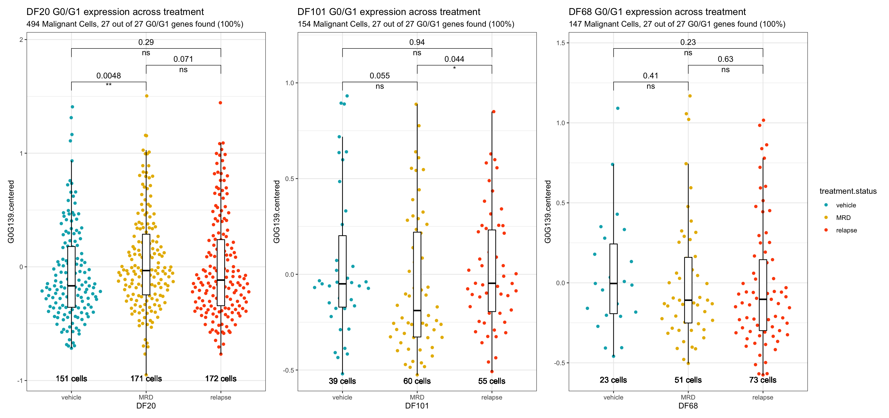
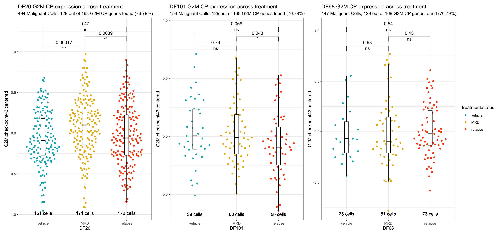
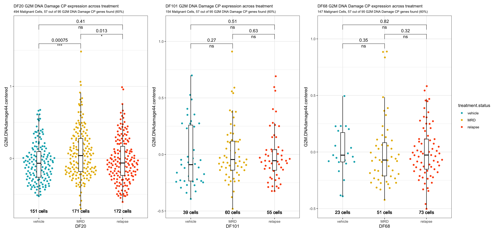
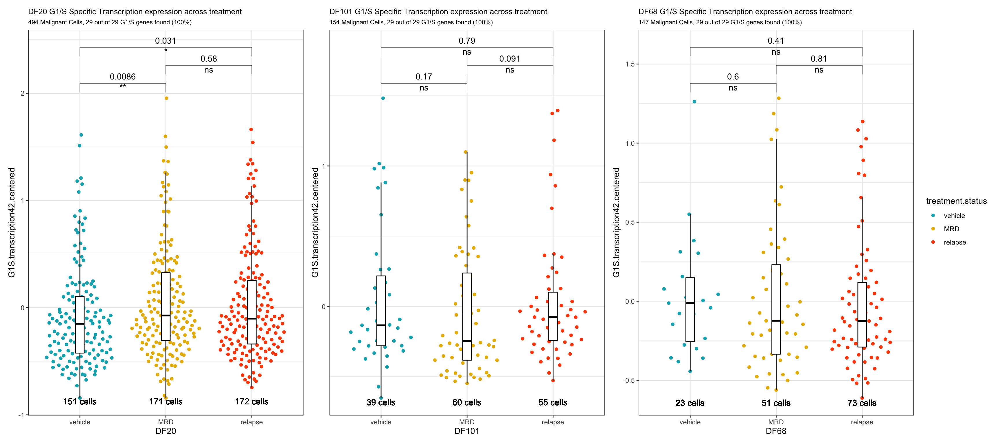
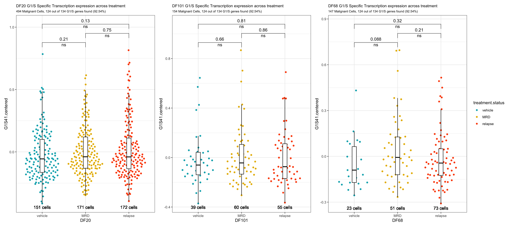
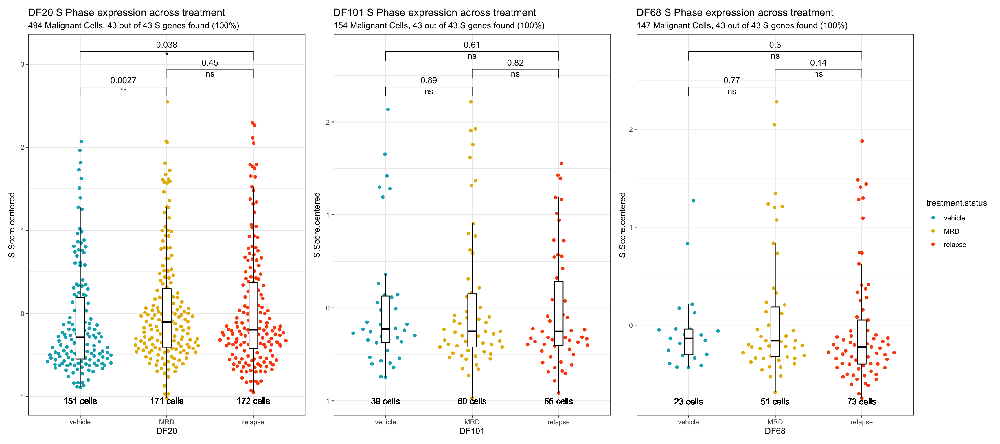
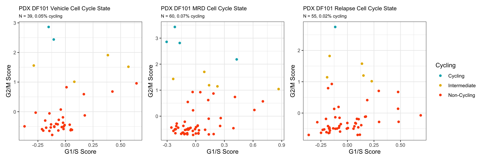
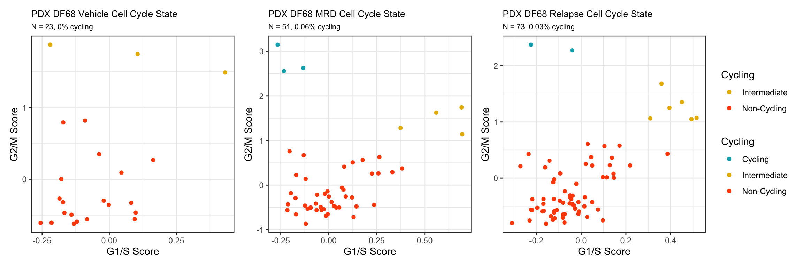

Izar 2020 PDX (Cohort 3) Cell Cycle Analysis
Jesslyn Goh and Mike Cuoco
7/29/2020
Last updated: 2020-08-15
Checks: 7 0
Knit directory: jesslyn_ovca/analysis/
This reproducible R Markdown analysis was created with workflowr (version 1.6.2). The Checks tab describes the reproducibility checks that were applied when the results were created. The Past versions tab lists the development history.
Great! Since the R Markdown file has been committed to the Git repository, you know the exact version of the code that produced these results.
Great job! The global environment was empty. Objects defined in the global environment can affect the analysis in your R Markdown file in unknown ways. For reproduciblity it’s best to always run the code in an empty environment.
The command set.seed(20200713) was run prior to running the code in the R Markdown file. Setting a seed ensures that any results that rely on randomness, e.g. subsampling or permutations, are reproducible.
Great job! Recording the operating system, R version, and package versions is critical for reproducibility.
Nice! There were no cached chunks for this analysis, so you can be confident that you successfully produced the results during this run.
Great job! Using relative paths to the files within your workflowr project makes it easier to run your code on other machines.
Great! You are using Git for version control. Tracking code development and connecting the code version to the results is critical for reproducibility.
The results in this page were generated with repository version b1ab47b. See the Past versions tab to see a history of the changes made to the R Markdown and HTML files.
Note that you need to be careful to ensure that all relevant files for the analysis have been committed to Git prior to generating the results (you can use wflow_publish or wflow_git_commit). workflowr only checks the R Markdown file, but you know if there are other scripts or data files that it depends on. Below is the status of the Git repository when the results were generated:
Ignored files:
Ignored: .DS_Store
Ignored: .Rhistory
Ignored: .Rproj.user/
Ignored: analysis/.DS_Store
Ignored: code/.DS_Store
Ignored: data/.DS_Store
Ignored: data/HTAPP/
Ignored: data/Izar_2020/
Ignored: data/gene_lists/.DS_Store
Ignored: data/gene_lists/cellcycle/.DS_Store
Ignored: data/gene_lists/extra/.DS_Store
Ignored: jesslyn_plots/
Ignored: mike_plots/
Ignored: old/.DS_Store
Ignored: old/edited/.DS_Store
Ignored: renv/.DS_Store
Ignored: renv/library/
Ignored: renv/python/
Ignored: renv/staging/
Ignored: vignettes/
Note that any generated files, e.g. HTML, png, CSS, etc., are not included in this status report because it is ok for generated content to have uncommitted changes.
These are the previous versions of the repository in which changes were made to the R Markdown (analysis/03.2_Izar2020_PDX_CellCycleAnalysis.Rmd) and HTML (docs/03.2_Izar2020_PDX_CellCycleAnalysis.html) files. If you’ve configured a remote Git repository (see ?wflow_git_remote), click on the hyperlinks in the table below to view the files as they were in that past version.
| File | Version | Author | Date | Message |
|---|---|---|---|---|
| Rmd | b1ab47b | jgoh2 | 2020-08-15 | workflowr::wflow_publish(files = files) |
| html | 789982d | jgoh2 | 2020-08-14 | Build site. |
| html | e05c328 | jgoh2 | 2020-08-12 | Build site. |
| html | 84edf85 | jgoh2 | 2020-08-12 | Build site. |
| Rmd | d504c59 | jgoh2 | 2020-08-12 | workflowr::wflow_publish(files = files) |
| html | a3ddf54 | jgoh2 | 2020-08-07 | Build site. |
| Rmd | 3e3db67 | jgoh2 | 2020-08-07 | workflowr::wflow_publish(files = files) |
| html | d801a7a | jgoh2 | 2020-08-04 | Build site. |
| Rmd | 6d23590 | jgoh2 | 2020-08-04 | workflowr::wflow_publish(files = files) |
| html | 26f64a3 | jgoh2 | 2020-08-03 | Build site. |
| Rmd | eaa900e | jgoh2 | 2020-08-03 | workflowr::wflow_publish(files = files) |
| html | 2dc1bee | jgoh2 | 2020-07-31 | Build site. |
| Rmd | 284aad4 | jgoh2 | 2020-07-31 | workflowr::wflow_publish(files = files) |
| Rmd | c8bb9fc | jgoh2 | 2020-07-30 | PDX Exploratory + DE + Cell Cycle Analyses |
| html | c8bb9fc | jgoh2 | 2020-07-30 | PDX Exploratory + DE + Cell Cycle Analyses |
IZAR 2020 PDX (COHORT 3) DATA DIFFERANTIAL EXPRESISON ANALYSIS
OVERVIEW
- The PDX data from Izar2020 consists of only Malignant cells from three HGSOC PDX models derived from patients with different treatment histories were selected for implantation:
- DF20 (BRCA WT treatment-naive, clinically platinum sensitive)
- DF101 (BRCA1 mutant, 2 lines of prior therapy, clinically platinum resistant)
- DF68 (BRCA1 mutant, 6 lines of prior therapy, clinically platinum resistant)
- After tumors were established, animals were divided into two groups per model:
- Vehicle (treated with DMSO)
- Carboplatin (treated with IP carboplatin)
- Carboplatin-treated mice for minimal residual disease (MRD) group were harvested for scRNA-seq
- The remaining carboplatin-treated mice were harvested at endpoint (vehicle)
- In our 5-part analysis of the Izar 2020 PDX data, we are interested in identifying differentially expressed genes and hallmark genesets between treatment statuses within each model.
- We split our PDX analysis into three parts:
- Load Data and Create PDX Seurat Object
- The code to this part of our analysis is in the read_Izar_2020.R file in the code folder. During this part of our analysis we:
- Load in PDX count matrix and Create Seurat Object
- Assign Metadata identities including:
- Mouse ID
- Model ID
- Treatment Status
- Score cells for cell cycle and hallmark genesets - Note: It does not matter whether we call AddModuleScore before or after subsetting and scaling each model because AddModuleScore uses the data slot.
- Save Seurat Object
- The code to this part of our analysis is in the read_Izar_2020.R file in the code folder. During this part of our analysis we:
- Process Data and Exploratory Data Analysis
- The code to this part of our analysis can be found in the 03_Izar2020_PDX_Load file in the old/edited folder. During this part of our analysis we:
- Load in PDX Seurat Object from Part 1 and subset by model. Continue analysis separately for each model.
- Scale and FindVariableFeatures (prepares data for dimensionality reduction)
- Dimensionality Reduction (PCA + UMAP)
- Save Seurat Objects
- The code to this part of our analysis can be found in the 03_Izar2020_PDX_Load file in the old/edited folder. During this part of our analysis we:
- Exploratory Data Analysis
- The code to this part of our analysis can be found in the 03.0_Izar2020_PDX_Exploratory Analysis file in the analysis folder. During this part of our analysis we:
- Load in PDX Seurat Object from Part 2. Analyze separately for each model.
- Compute summary metrics for PDX data such as:
- Number of cells per model per treatment
- Number of cells per treatment per cell cycle phase
- Visualize how cells separate based on metadata identities via UMAP - Intermodel heterogeneity: How do cells separate by model? - Intramodel heterogeneity:
- How do cells separate by treament status?
- How do cells separate by cell cycle phase?
- The code to this part of our analysis can be found in the 03.0_Izar2020_PDX_Exploratory Analysis file in the analysis folder. During this part of our analysis we:
- DE Analysis
- TYPE #1 DE ANALYSIS: Visualizing and Quantifying Differentially Expression on Predefined GO Genesets
- Violin Plots and UMAP
- Gene Set Enrichment Analysis (GSEA)
- TYPE #2 DE ANALYSIS: Finding DE Genes from scratch
- Volcano Plots
- TYPE #1 DE ANALYSIS: Visualizing and Quantifying Differentially Expression on Predefined GO Genesets
- CELL CYCLE ANALYSIS
- TYPE #1 CELL CYCLE ANALYSIS: Examine correlation between treatment condition and cell cycle phase
- Evaluate the idea that cell cycle might influence expression of signatures
- Load Data and Create PDX Seurat Object
This is the fifth part of our 5-part analysis of the Izar 2020 PDX (Cohort 3) data.
CELL CYCLE ANALYSIS IN-DEPTH EXPLANATION
We are interested in answering a few questions for our Cell Cycle Analysis:
CELL CYCLE ANALYSIS
- QUESTION #1 Are more cells at different cell cycle phases between treatments?
- APPROACH Violin Plots and UMAP
- Visualize differences in cell cycle score across treatment conditions with:
- Stacked Bar Plot
- Violin Plot
- UMAP by treatment vs. UMAP by cell cycle phase vs. UMAP by S and G2M Score
- Statistical test: is the difference in cell cycle scores across treatment conditions statistically
- Visualize differences in cell cycle score across treatment conditions with:
- APPROACH Violin Plots and UMAP
- QUESTION #2 Is there a correlation between cell cycle phase and the expression of signatures?
- APPROACH Violin Plots
- Create Violin Plots for each hallmark of interest like **DE Analysis #1/APPROACH #1.
- Stratify the Violin Plots by cell cycle phase
- APPROACH Violin Plots
STEP 1 LOAD IN SEURAT OBJECTS AND GENESETS
# Load packages
source(here::here('packages.R'))
#Read in PDX RDS object
PDX_All = readRDS("data/Izar_2020/test/jesslyn_PDX_All_processed.RDS")
PDX_DF20 = readRDS("data/Izar_2020/test/jesslyn_PDX_DF20_processed.RDS")
PDX_DF101 = readRDS("data/Izar_2020/test/jesslyn_PDX_DF101_processed.RDS")
PDX_DF68 = readRDS("data/Izar_2020/test/jesslyn_PDX_DF68_processed.RDS")
# Read in ccgenes
ccgenes = read_lines("data/gene_lists/regev_lab_cell_cycle_genes.txt")
s.genes <- ccgenes[1:43]
g2m.genes <- ccgenes[44:97]
#read hallmarks of interest
g0g1.genes <- read_lines("data/gene_lists/cellcycle/G0G1.txt", skip = 2)
g1S.DNAdamage.genes <- read_lines("data/gene_lists/cellcycle/G1SDNAdamage.txt", skip = 2)
g1S.transcription.genes <- read_lines("data/gene_lists/cellcycle/G1Stranscription.txt", skip = 2)
g2m.checkpoint.genes <- read_lines("data/gene_lists/cellcycle/G2Mcheckpoint.txt", skip = 2)
g2m.DNAdamage.genes <- read_lines("data/gene_lists/cellcycle/G2MDNAdamage.txt", skip = 2)
g2m.replicationCP.genes <- read_lines("data/gene_lists/cellcycle/G2MreplicationCheckpoint.txt", skip = 2)
hallmark_names = read_lines("data/gene_lists/hallmarks.txt")
hallmark.list <- vector(mode = "list", length = length(hallmark_names) + 9)
names(hallmark.list) <- c(hallmark_names, "GO.OXPHOS", "KEGG.OXPHOS", "UNUPDATED.OXPHOS",
"UNUPDATED.UPR", "G0G1", "G1S.DNAdamage", "G1S.transcription", "G2M.checkpoint",
"G2M.DNAdamage")
for(hm in hallmark_names){
file <- read_lines(glue("data/gene_lists/hallmarks/{hm}_updated.txt"), skip = 1)
hallmark.list[[hm]] <- file
}
hallmark.list[["GO.OXPHOS"]] <- read_lines("data/gene_lists/extra/GO.OXPHOS.txt", skip = 1)
hallmark.list[["KEGG.OXPHOS"]] <- read_lines("data/gene_lists/extra/KEGG.OXPHOS.txt", skip = 2)
hallmark.list[["UNUPDATED.OXPHOS"]] <- read_lines("data/gene_lists/oxphos.txt", skip =1)
hallmark.list[["UNUPDATED.UPR"]] <- read_lines("data/gene_lists/upr.txt", skip =1)
hallmark.list[["G0G1"]] <- g0g1.genes
hallmark.list[["G1S.DNAdamage"]] <- g1S.DNAdamage.genes
hallmark.list[["G1S.transcription"]] <- g1S.transcription.genes
hallmark.list[["G2M.checkpoint"]] <- g2m.checkpoint.genes
hallmark.list[["G2M.DNAdamage"]] <- g2m.DNAdamage.genes
#center module and cell cycle scores and reassign to the metadata of each Seurat object
hm.names <- names(PDX_All@meta.data)[9:53]
for(i in hm.names){
DF20.hm.centered <- scale(PDX_DF20[[i]], center = TRUE, scale = FALSE)
PDX_DF20 <- AddMetaData(PDX_DF20, DF20.hm.centered, col.name = glue("{i}.centered"))
DF101.hm.centered <- scale(PDX_DF101[[i]], center = TRUE, scale = FALSE)
PDX_DF101 <- AddMetaData(PDX_DF101, DF101.hm.centered, col.name = glue("{i}.centered"))
DF68.hm.centered <- scale(PDX_DF68[[i]], center = TRUE, scale = FALSE)
PDX_DF68 <- AddMetaData(PDX_DF68, DF68.hm.centered, col.name = glue("{i}.centered"))
}STEP 2 CELL CYCLE ANALYSIS
In our Exploratory Analysis section, we observed that PC_2 captures Cell Cycle Phase, S.Score and G2M scores, as cells in the same phase or have high S or G2M scores are found to be near each other on the PC_2 Axis. However, cells did not seem to cluster by treatment status. We now use a more quantitative approach to investigate the correlation between treatment and cell cycle phase.
- QUESTION #1 Are more cells at different cell cycle phases between treatments?
- HYPOTHESIS There should be less cycling cells in the MRD treatment conditions relative to the other two treatment conditions.
- APPROACH Violin Plots and UMAP
- Visualize differences in cell cycle score across treatment conditions with:
- Stacked Bar Plot
- Violin Plot
- Statistical test: is the difference in cell cycle scores across treatment conditions statistically significant.
- Visualize differences in cell cycle score across treatment conditions with:
- APPROACH Violin Plots and UMAP
#Stacked Bar Plot --------------------------
hms.centered <- c("UNUPDATED.OXPHOS37.centered", "UNUPDATED.UPR38.centered")
PDXs <- c(PDX_DF20, PDX_DF101, PDX_DF68)
PDX.names <- c("DF20", "DF101", "DF68")
bar.plots <- vector("list", length = 3)
names(bar.plots) <- PDX.names
for(i in 1:length(PDXs)){
obj = PDXs[[i]]
name = PDX.names[[i]]
numCells = nrow(obj@meta.data)
obj$Phase <- factor(obj$Phase, levels = c("G1", "S", "G2M"))
t = table(obj$Phase, obj$treatment.status) %>%
as.data.frame() %>%
rename(Phase = Var1, Treatment = Var2, numCells = Freq)
sum = c()
z = 1
while(z < nrow(t)){
n = t$numCells[z] + t$numCells[z+1] + t$numCells[z+2]
sum = c(sum, rep(n,3))
z = z + 3
}
t <- t %>% mutate(total = sum) %>% mutate(percent = (numCells/total)*100)
p = t %>%
ggplot(aes(x=Treatment, y=percent, fill=Phase)) +
geom_bar(stat="identity") +
labs(title = glue("{name} % of Malignant Cells in Each Cell Cycle Phase/ Treatment"), subtitle = glue("{numCells} Malignant Cells"), caption = "Labeled by # cells in each phase per treatment") +
theme(plot.title = element_text(size = 10), plot.subtitle = element_text(size = 10), plot.caption = element_text(size = 8)) +
geom_text(aes(label = glue("{numCells} Cells")), position = "stack", hjust = 0.5, vjust = 2, size = 3, color = "white")+
scale_fill_manual(values = c("#00AFBB", "#E7B800", "#FC4E07"))
bar.plots[[i]] <- p
}
bar.plots[["DF20"]] + bar.plots[["DF101"]] + bar.plots[["DF68"]] + plot_layout(guides= 'collect')
- OBSERVATIONS
- Different fractions of cells do seem to be in different cell cycle phases depending on the treatment condition. However, the trends we see do not necessary agree with our hypothesis that the MRD treatment condition will have the highest % of noncycling cells:
- DF20: % Noncycling - Vehicle > Relapse > MRD (does not support our hypothesis)
- DF101: % Noncycling - Vehicle > MRD > Relapse (does not support our hypothesis)
- DF68: % Noncycling - Relapse > Vehicle > MRD (does not support our hypothesis)
- In all cases, cells in MRD do not seem to have the highest fraction of noncycling G1 cells.
- Different fractions of cells do seem to be in different cell cycle phases depending on the treatment condition. However, the trends we see do not necessary agree with our hypothesis that the MRD treatment condition will have the highest % of noncycling cells:
To investigate this further, we build violin plots of cell cycle scores separated by treatment status: - Noncycling Scores - G0 / early G1 - G1/S DNA Damage Checkpoint - G2M Checkpoint - G2M DNA Damage Checkpoint - Cycling Scores - G1/S Specific Transcription - S Score - G2M Score
1) NONCYCLING SCORES
nc <- c("G0G139.centered", "G1S.DNAdamage40.centered", "G2M.checkpoint42.centered", "G2M.DNAdamage43.centered")
nc.names <- c("G0/G1", "G1/S DNA Damage CP", "G2M CP", "G2M DNA Damage CP")
#G0 / G1 ------------
g0g1.swarm <- vector("list", length = 3)
names(g0g1.swarm) <- PDX.names
for(i in 1:3){
PDX <- PDXs[[i]]
PDX.name <- PDX.names[[i]]
my_comparisons <- list(
c("MRD", "vehicle"),
c("MRD", "relapse"),
c("vehicle", "relapse")
)
feature.found <- sum(hallmark.list[["G0G1"]] %in% rownames(PDX))
feature.length <- length(hallmark.list[["G0G1"]])
feature.pFound <- round((feature.found / feature.length)*100, 2)
numCells <- nrow(PDX@meta.data)
p <- ggplot(PDX@meta.data, aes(x= treatment.status , y = G0G139.centered, color = treatment.status)) +
geom_quasirandom(groupOnX =TRUE) +
theme_bw() +
scale_color_manual(values = c("#00AFBB", "#E7B800", "#FC4E07")) +
labs(title = glue("{PDX.name} G0/G1 expression across treatment"), x = PDX.name, subtitle = glue("{numCells} Malignant Cells, {feature.found} out of {feature.length} G0/G1 genes found ({feature.pFound}%)")) +
geom_boxplot(width = 0.10, position = position_dodge(0.9), alpha = 1, show.legend = F, color = "black", outlier.alpha = 0) +
geom_text(label = paste(sum(PDX$treatment.status == "vehicle"), "cells"), x = "vehicle", y = min(PDX[["G0G139.centered"]]) -0.03, show.legend = FALSE, color = "black") +
geom_text(label = paste(sum(PDX$treatment.status == "MRD"), "cells"), x = "MRD", y = min(PDX[["G0G139.centered"]]) - 0.03, show.legend = FALSE, color = "black") +
geom_text(label = paste(sum(PDX$treatment.status == "relapse"), "cells"), x = "relapse", y = min(PDX[["G0G139.centered"]]) - 0.03, show.legend = FALSE, color = "black") +
stat_compare_means(comparisons = my_comparisons, method = "wilcox.test", label = "p.format", step.increase = 0.06) +
stat_compare_means(comparisons = my_comparisons, method = "wilcox.test", label = "p.signif", step.increase = 0.06, bracket.size = 0, vjust = 1.8)
g0g1.swarm[[PDX.name]] <- p
}
g0g1.swarm[["DF20"]] + g0g1.swarm[["DF101"]] + g0g1.swarm[["DF68"]] + plot_layout(guides = "collect", ncol = 3)
| Version | Author | Date |
|---|---|---|
| 84edf85 | jgoh2 | 2020-08-12 |
#G1 / S ------------
g1s.swarm <- vector("list", length = 3)
names(g1s.swarm) <- PDX.names
for(i in 1:3){
PDX <- PDXs[[i]]
PDX.name <- PDX.names[[i]]
my_comparisons <- list(
c("MRD", "vehicle"),
c("MRD", "relapse"),
c("vehicle", "relapse")
)
feature.found <- sum(hallmark.list[["G1S.DNAdamage"]] %in% rownames(PDX))
feature.length <- length(hallmark.list[["G1S.DNAdamage"]])
feature.pFound <- round((feature.found / feature.length)*100, 2)
numCells <- nrow(PDX@meta.data)
p <- ggplot(PDX@meta.data, aes(x= treatment.status , y = G1S.DNAdamage40.centered, color = treatment.status)) +
geom_quasirandom(groupOnX =TRUE) +
theme_bw() +
scale_color_manual(values = c("#00AFBB", "#E7B800", "#FC4E07")) +
labs(title = glue("{PDX.name} G1/S DNA Damage CP expression across treatment"), x = PDX.name, subtitle = glue("{numCells} Malignant Cells, {feature.found} out of {feature.length} G1/S DNA Damage CP genes found ({feature.pFound}%)")) + theme(plot.title = element_text(size = 10), plot.subtitle = element_text(size = 8)) +
geom_boxplot(width = 0.10, position = position_dodge(0.9), alpha = 1, show.legend = F, color = "black", outlier.alpha = 0) +
geom_text(label = paste(sum(PDX$treatment.status == "vehicle"), "cells"), x = "vehicle", y = min(PDX[["G1S.DNAdamage40.centered"]]) -0.03, show.legend = FALSE, color = "black") +
geom_text(label = paste(sum(PDX$treatment.status == "MRD"), "cells"), x = "MRD", y = min(PDX[["G1S.DNAdamage40.centered"]]) - 0.03, show.legend = FALSE, color = "black") +
geom_text(label = paste(sum(PDX$treatment.status == "relapse"), "cells"), x = "relapse", y = min(PDX[["G1S.DNAdamage40.centered"]]) - 0.03, show.legend = FALSE, color = "black") +
stat_compare_means(comparisons = my_comparisons, method = "wilcox.test", label = "p.format", step.increase = 0.06) +
stat_compare_means(comparisons = my_comparisons, method = "wilcox.test", label = "p.signif", step.increase = 0.06, bracket.size = 0, vjust = 1.8)
g1s.swarm[[PDX.name]] <- p
}
g1s.swarm[["DF20"]] + g1s.swarm[["DF101"]] + g1s.swarm[["DF68"]] + plot_layout(guides = "collect", ncol = 3)
| Version | Author | Date |
|---|---|---|
| 84edf85 | jgoh2 | 2020-08-12 |
#G2M checkpoint ----
g2m.swarm <- vector("list", length =3)
names(g2m.swarm) <- PDX.names
for(i in 1:3){
PDX <- PDXs[[i]]
PDX.name <- PDX.names[[i]]
my_comparisons <- list(
c("MRD", "vehicle"),
c("MRD", "relapse"),
c("vehicle", "relapse")
)
feature.found <- sum(hallmark.list[["G2M.checkpoint"]] %in% rownames(PDX))
feature.length <- length(hallmark.list[["G2M.checkpoint"]])
feature.pFound <- round((feature.found / feature.length)*100, 2)
numCells <- nrow(PDX@meta.data)
p <- ggplot(PDX@meta.data, aes(x= treatment.status , y = G2M.checkpoint42.centered, color = treatment.status)) +
geom_quasirandom(groupOnX =TRUE) +
theme_bw() +
scale_color_manual(values = c("#00AFBB", "#E7B800", "#FC4E07")) +
labs(title = glue("{PDX.name} G2M CP expression across treatment"), x = PDX.name, subtitle = glue("{numCells} Malignant Cells, {feature.found} out of {feature.length} G2M CP genes found ({feature.pFound}%)")) +
geom_boxplot(width = 0.10, position = position_dodge(0.9), alpha = 1, show.legend = F, color = "black", outlier.alpha = 0) +
geom_text(label = paste(sum(PDX$treatment.status == "vehicle"), "cells"), x = "vehicle", y = min(PDX[["G2M.checkpoint42.centered"]]) -0.03, show.legend = FALSE, color = "black") +
geom_text(label = paste(sum(PDX$treatment.status == "MRD"), "cells"), x = "MRD", y = min(PDX[["G2M.checkpoint42.centered"]]) - 0.03, show.legend = FALSE, color = "black") +
geom_text(label = paste(sum(PDX$treatment.status == "relapse"), "cells"), x = "relapse", y = min(PDX[["G2M.checkpoint42.centered"]]) - 0.03, show.legend = FALSE, color = "black") +
stat_compare_means(comparisons = my_comparisons, method = "wilcox.test", label = "p.format", step.increase = 0.06) +
stat_compare_means(comparisons = my_comparisons, method = "wilcox.test", label = "p.signif", step.increase = 0.06, bracket.size = 0, vjust = 1.8)
g2m.swarm[[PDX.name]] <- p
}
g2m.swarm[["DF20"]] + g2m.swarm[["DF101"]] + g2m.swarm[["DF68"]] + plot_layout(guides = "collect", ncol = 3)
| Version | Author | Date |
|---|---|---|
| 84edf85 | jgoh2 | 2020-08-12 |
#G2M DNA Damage ----
g2m.dna.swarm <- vector("list", length = 3)
names(g2m.dna.swarm) <- PDX.names
for(i in 1:3){
PDX <- PDXs[[i]]
PDX.name <- PDX.names[[i]]
my_comparisons <- list(
c("MRD", "vehicle"),
c("MRD", "relapse"),
c("vehicle", "relapse")
)
feature.found <- sum(hallmark.list[["G2M.DNAdamage"]] %in% rownames(PDX))
feature.length <- length(hallmark.list[["G2M.DNAdamage"]])
feature.pFound <- round((feature.found / feature.length)*100, 2)
numCells <- nrow(PDX@meta.data)
p <- ggplot(PDX@meta.data, aes(x= treatment.status , y = G2M.DNAdamage43.centered, color = treatment.status)) +
geom_quasirandom(groupOnX =TRUE) +
theme_bw() +
scale_color_manual(values = c("#00AFBB", "#E7B800", "#FC4E07")) +
labs(title = glue("{PDX.name} G2M DNA Damage CP expression across treatment"), x = PDX.name, subtitle = glue("{numCells} Malignant Cells, {feature.found} out of {feature.length} G2M DNA Damage CP genes found ({feature.pFound}%)")) + theme(plot.title = element_text(size = 10), plot.subtitle = element_text(size = 8)) +
geom_boxplot(width = 0.10, position = position_dodge(0.9), alpha = 1, show.legend = F, color = "black", outlier.alpha = 0) +
geom_text(label = paste(sum(PDX$treatment.status == "vehicle"), "cells"), x = "vehicle", y = min(PDX[["G2M.DNAdamage43.centered"]]) -0.03, show.legend = FALSE, color = "black") +
geom_text(label = paste(sum(PDX$treatment.status == "MRD"), "cells"), x = "MRD", y = min(PDX[["G2M.DNAdamage43.centered"]]) - 0.03, show.legend = FALSE, color = "black") +
geom_text(label = paste(sum(PDX$treatment.status == "relapse"), "cells"), x = "relapse", y = min(PDX[["G2M.DNAdamage43.centered"]]) - 0.03, show.legend = FALSE, color = "black") +
stat_compare_means(comparisons = my_comparisons, method = "wilcox.test", label = "p.format", step.increase = 0.06) +
stat_compare_means(comparisons = my_comparisons, method = "wilcox.test", label = "p.signif", step.increase = 0.06, bracket.size = 0, vjust = 1.8)
g2m.dna.swarm[[PDX.name]] <- p
}
g2m.dna.swarm[["DF20"]] + g2m.dna.swarm[["DF101"]] + g2m.dna.swarm[["DF68"]] + plot_layout(guides = "collect", ncol = 3)
| Version | Author | Date |
|---|---|---|
| 84edf85 | jgoh2 | 2020-08-12 |
We hypothesized that samples MRD will have enriched levels of non/low-cycling genes.
- Statistically significant results
- G0/G1
- DF20 MRD > Vehicle (supports our hypothesis)
- DF101 Relapse > MRD (rejects our hypothesis)
- G1/S DNA Damage Checkpoint
- DF20 MRD > Vehicle and Relapse (supports our hypothesis)
- DF101 Vehicle > Relapse
- G2M Checkpoint
- DF20 MRD > Vehicle and Relapse (supports our hypothesis)
- G2M DNA Damage Checkpoint
- DF20 MRD > Vehicle and Relapse (supports our hypothesis)
- G0/G1
We get the same results for each non/low/cell cycle arrest geneset for DF20, where MRD > Vehicle and Relapse, which supports our hypothesis.
2) CYCLING SCORES
- Cycling Scores
- G1/S Specific Transcription
- S Score
- G2M Score
#VlnPlot -------------------------
cc <- c("G1S.transcription41.centered", "S.Score.centered", "G2M.Score.centered")
cc.names <- c("G1/S Specific Transcription", "S Score", "G2M Score")
# G1/S Transcription ------
g1s.transcription.swarm <- vector("list", length = 3)
names(g1s.transcription.swarm) <- PDX.names
for(i in 1:3){
PDX <- PDXs[[i]]
PDX.name <- PDX.names[[i]]
my_comparisons <- list(
c("MRD", "vehicle"),
c("MRD", "relapse"),
c("vehicle", "relapse")
)
feature.found <- sum(hallmark.list[["G1S.transcription"]] %in% rownames(PDX))
feature.length <- length(hallmark.list[["G1S.transcription"]])
feature.pFound <- round((feature.found / feature.length)*100, 2)
numCells <- nrow(PDX@meta.data)
p <- ggplot(PDX@meta.data, aes(x= treatment.status , y = G1S.transcription41.centered, color = treatment.status)) +
geom_quasirandom(groupOnX =TRUE) +
theme_bw() +
scale_color_manual(values = c("#00AFBB", "#E7B800", "#FC4E07")) +
labs(title = glue("{PDX.name} G1/S Specific Transcription expression across treatment"), x = PDX.name, subtitle = glue("{numCells} Malignant Cells, {feature.found} out of {feature.length} G1/S genes found ({feature.pFound}%)")) +
theme(plot.title = element_text(size = 10), plot.subtitle = element_text(size = 8)) +
geom_boxplot(width = 0.10, position = position_dodge(0.9), alpha = 1, show.legend = F, color = "black", outlier.alpha = 0) +
geom_text(label = paste(sum(PDX$treatment.status == "vehicle"), "cells"), x = "vehicle", y = min(PDX[["G1S.transcription41.centered"]]) -0.03, show.legend = FALSE, color = "black") +
geom_text(label = paste(sum(PDX$treatment.status == "MRD"), "cells"), x = "MRD", y = min(PDX[["G1S.transcription41.centered"]]) - 0.03, show.legend = FALSE, color = "black") +
geom_text(label = paste(sum(PDX$treatment.status == "relapse"), "cells"), x = "relapse", y = min(PDX[["G1S.transcription41.centered"]]) - 0.03, show.legend = FALSE, color = "black") +
stat_compare_means(comparisons = my_comparisons, method = "wilcox.test", label = "p.format", step.increase = 0.06) +
stat_compare_means(comparisons = my_comparisons, method = "wilcox.test", label = "p.signif", step.increase = 0.06, bracket.size = 0, vjust = 1.8)
g1s.transcription.swarm[[PDX.name]] <- p
}
g1s.transcription.swarm[["DF20"]] + g1s.transcription.swarm[["DF101"]] + g1s.transcription.swarm[["DF68"]] + plot_layout(guides = "collect", ncol = 3)
# S ---------
s.swarm <- vector("list", length = 3)
names(s.swarm) <- PDX.names
for(i in 1:3){
PDX <- PDXs[[i]]
PDX.name <- PDX.names[[i]]
my_comparisons <- list(
c("MRD", "vehicle"),
c("MRD", "relapse"),
c("vehicle", "relapse")
)
feature.found <- sum(s.genes %in% rownames(PDX))
feature.length <- length(s.genes)
feature.pFound <- round((feature.found / feature.length)*100, 2)
numCells <- nrow(PDX@meta.data)
p <- ggplot(PDX@meta.data, aes(x= treatment.status , y = S.Score.centered, color = treatment.status)) +
geom_quasirandom(groupOnX =TRUE) +
theme_bw() +
scale_color_manual(values = c("#00AFBB", "#E7B800", "#FC4E07")) +
labs(title = glue("{PDX.name} S Phase expression across treatment"), x = PDX.name, subtitle = glue("{numCells} Malignant Cells, {feature.found} out of {feature.length} S genes found ({feature.pFound}%)")) +
geom_boxplot(width = 0.10, position = position_dodge(0.9), alpha = 1, show.legend = F, color = "black", outlier.alpha = 0) +
geom_text(label = paste(sum(PDX$treatment.status == "vehicle"), "cells"), x = "vehicle", y = min(PDX[["S.Score.centered"]]) -0.03, show.legend = FALSE, color = "black") +
geom_text(label = paste(sum(PDX$treatment.status == "MRD"), "cells"), x = "MRD", y = min(PDX[["S.Score.centered"]]) - 0.03, show.legend = FALSE, color = "black") +
geom_text(label = paste(sum(PDX$treatment.status == "relapse"), "cells"), x = "relapse", y = min(PDX[["S.Score.centered"]]) - 0.03, show.legend = FALSE, color = "black") +
stat_compare_means(comparisons = my_comparisons, method = "wilcox.test", label = "p.format", step.increase = 0.06) +
stat_compare_means(comparisons = my_comparisons, method = "wilcox.test", label = "p.signif", step.increase = 0.06, bracket.size = 0, vjust = 1.8)
s.swarm[[PDX.name]] <- p
}
s.swarm[["DF20"]] + s.swarm[["DF101"]] + s.swarm[["DF68"]] + plot_layout(guides = "collect", ncol = 3)
# G2M ------------------
g2m.warm <- vector("list", length = 3)
names(g2m.swarm) <- PDX.names
for(i in 1:3){
PDX <- PDXs[[i]]
PDX.name <- PDX.names[[i]]
my_comparisons <- list(
c("MRD", "vehicle"),
c("MRD", "relapse"),
c("vehicle", "relapse")
)
feature.found <- sum(g2m.genes %in% rownames(PDX))
feature.length <- length(g2m.genes)
feature.pFound <- round((feature.found / feature.length)*100, 2)
numCells <- nrow(PDX@meta.data)
p <- ggplot(PDX@meta.data, aes(x= treatment.status , y = G2M.Score.centered, color = treatment.status)) +
geom_quasirandom(groupOnX =TRUE) +
theme_bw() +
scale_color_manual(values = c("#00AFBB", "#E7B800", "#FC4E07")) +
labs(title = glue("{PDX.name} G2M Phase expression across treatment"), x = PDX.name, subtitle = glue("{numCells} Malignant Cells, {feature.found} out of {feature.length} G2M genes found ({feature.pFound}%)")) +
geom_boxplot(width = 0.10, position = position_dodge(0.9), alpha = 1, show.legend = F, color = "black", outlier.alpha = 0) +
geom_text(label = paste(sum(PDX$treatment.status == "vehicle"), "cells"), x = "vehicle", y = min(PDX[["G2M.Score.centered"]]) -0.03, show.legend = FALSE, color = "black") +
geom_text(label = paste(sum(PDX$treatment.status == "MRD"), "cells"), x = "MRD", y = min(PDX[["G2M.Score.centered"]]) - 0.03, show.legend = FALSE, color = "black") +
geom_text(label = paste(sum(PDX$treatment.status == "relapse"), "cells"), x = "relapse", y = min(PDX[["G2M.Score.centered"]]) - 0.03, show.legend = FALSE, color = "black") +
stat_compare_means(comparisons = my_comparisons, method = "wilcox.test", label = "p.format", step.increase = 0.06) +
stat_compare_means(comparisons = my_comparisons, method = "wilcox.test", label = "p.signif", step.increase = 0.06, bracket.size = 0, vjust = 1.8)
g2m.swarm[[PDX.name]] <- p
}
g2m.swarm[["DF20"]] + g2m.swarm[["DF101"]] + g2m.swarm[["DF68"]] + plot_layout(guides = "collect", ncol = 3)
- CONCLUSIONS
- Statistically significant results:
- G1/S Specific Transcription Score
- DF20
- MRD > Vehicle
- Relapse > Vehicle
- DF20
- S Score
- DF20
- MRD > Vehicle
- Relapse >> Vehicle
- DF20
- G2M Score
- DF20
- MRD > Vehicle
- Relapse >> Vehicle
- DF20
- G1/S Specific Transcription Score
- Statistically significant results:
- Although we have consistent results for DF20 for cycling genes, where MRD > Vehicle, this observation does not support our hypothesis, and it also contradicts our findings for noncycling gene scores, where MRD also has the higher scores across all treatment statuses.
- It is possible that MRD in DF20 has higher noncycling and cycling gene expression simply because it has more nFeature/nCount in general. We plot nFeature/nCount across treatment status within each model to observe if our hypothesis is tre.
#nFeature -----
nF.swarm <- vector("list", length = 3)
names(nF.swarm) <- PDX.names
for(i in 1:3){
PDX <- PDXs[[i]]
PDX.name <- PDX.names[[i]]
my_comparisons <- list(
c("MRD", "vehicle"),
c("MRD", "relapse"),
c("vehicle", "relapse")
)
numCells <- nrow(PDX@meta.data)
p <- ggplot(PDX@meta.data, aes(x= treatment.status , y = nFeature_RNA, color = treatment.status)) +
geom_quasirandom(groupOnX =TRUE) +
theme_bw() +
scale_color_manual(values = c("#00AFBB", "#E7B800", "#FC4E07")) +
labs(title = glue("{PDX.name} nFeature across treatment"), x = PDX.name, subtitle = glue("{numCells} Malignant Cells")) +
geom_boxplot(width = 0.10, position = position_dodge(0.9), alpha = 1, show.legend = F, color = "black", outlier.alpha = 0) +
geom_text(label = paste(sum(PDX$treatment.status == "vehicle"), "cells"), x = "vehicle", y = min(PDX[["nFeature_RNA"]]) -0.03, show.legend = FALSE, color = "black") +
geom_text(label = paste(sum(PDX$treatment.status == "MRD"), "cells"), x = "MRD", y = min(PDX[["nFeature_RNA"]]) - 0.03, show.legend = FALSE, color = "black") +
geom_text(label = paste(sum(PDX$treatment.status == "relapse"), "cells"), x = "relapse", y = min(PDX[["nFeature_RNA"]]) - 0.03, show.legend = FALSE, color = "black") +
stat_compare_means(comparisons = my_comparisons, method = "wilcox.test", label = "p.format", step.increase = 0.06) +
stat_compare_means(comparisons = my_comparisons, method = "wilcox.test", label = "p.signif", step.increase = 0.06, bracket.size = 0, vjust = 1.8)
nF.swarm[[PDX.name]] <- p
}
nF.swarm[["DF20"]] + nF.swarm[["DF101"]] + nF.swarm[["DF68"]] + plot_layout(guides = "collect", ncol = 3)#nCount -----
nC.swarm <- vector("list", length = 3)
names(nC.swarm) <- PDX.names
for(i in 1:3){
PDX <- PDXs[[i]]
PDX.name <- PDX.names[[i]]
my_comparisons <- list(
c("MRD", "vehicle"),
c("MRD", "relapse"),
c("vehicle", "relapse")
)
numCells <- nrow(PDX@meta.data)
p <- ggplot(PDX@meta.data, aes(x= treatment.status , y = nCount_RNA, color = treatment.status)) +
geom_quasirandom(groupOnX =TRUE) +
theme_bw() +
scale_color_manual(values = c("#00AFBB", "#E7B800", "#FC4E07")) +
labs(title = glue("{PDX.name} nCount across treatment"), x = PDX.name, subtitle = glue("{numCells} Malignant Cells")) +
geom_boxplot(width = 0.10, position = position_dodge(0.9), alpha = 1, show.legend = F, color = "black", outlier.alpha = 0) +
geom_text(label = paste(sum(PDX$treatment.status == "vehicle"), "cells"), x = "vehicle", y = min(PDX[["nCount_RNA"]]) -0.03, show.legend = FALSE, color = "black") +
geom_text(label = paste(sum(PDX$treatment.status == "MRD"), "cells"), x = "MRD", y = min(PDX[["nCount_RNA"]]) - 0.03, show.legend = FALSE, color = "black") +
geom_text(label = paste(sum(PDX$treatment.status == "relapse"), "cells"), x = "relapse", y = min(PDX[["nCount_RNA"]]) - 0.03, show.legend = FALSE, color = "black") +
stat_compare_means(comparisons = my_comparisons, method = "wilcox.test", label = "p.format", step.increase = 0.06) +
stat_compare_means(comparisons = my_comparisons, method = "wilcox.test", label = "p.signif", step.increase = 0.06, bracket.size = 0, vjust = 1.8)
nC.swarm[[PDX.name]] <- p
}
nC.swarm[["DF20"]] + nC.swarm[["DF101"]] + nC.swarm[["DF68"]] + plot_layout(guides = "collect", ncol = 3)
Interestingly, the MRD treatment status in DF20 actually has the lowest nFeature and nCount, which rejects our hypothesis. Furthermore, although the MRD treatment status in DF101 and DF68 are significantly higher than the other two treatment conditions, they do not express significantly higher noncycling or cycling scores. Cell cycle expression therefore does not seem to be significantly correlated with nFeature or nCount.
STATISTICAL SUMMARY
#DF20 ---------------------------------
DF20.vehicle <- subset(PDX_DF20, subset = (treatment.status == "vehicle"))
DF20.MRD <- subset(PDX_DF20, subset = (treatment.status == "MRD"))
DF20.relapse <- subset(PDX_DF20, subset = (treatment.status == "relapse"))
DF20.sscore.df <- data.frame(
"MRDvsVehicle" = wilcox.test(DF20.MRD$S.Score.centered, DF20.vehicle$S.Score.centered)$p.value,
"MRDvsRelapse" = wilcox.test(DF20.MRD$S.Score.centered, DF20.relapse$S.Score.centered)$p.value,
"VehiclevsRelapse" = wilcox.test(DF20.vehicle$S.Score.centered, DF20.relapse$S.Score.centered)$p.value
)
DF20.g2m.df <-
data.frame(
"MRDvsVehicle" = wilcox.test(DF20.MRD$G2M.Score.centered, DF20.vehicle$G2M.Score.centered)$p.value,
"MRDvsRelapse" = wilcox.test(DF20.MRD$G2M.Score.centered, DF20.relapse$G2M.Score.centered)$p.value,
"VehiclevsRelapse" = wilcox.test(DF20.vehicle$G2M.Score.centered, DF20.relapse$G2M.Score.centered)$p.value
)
#DF101 ---------------------------------
DF101.vehicle <- subset(PDX_DF101, subset = (treatment.status == "vehicle"))
DF101.MRD <- subset(PDX_DF101, subset = (treatment.status == "MRD"))
DF101.relapse <- subset(PDX_DF101, subset = (treatment.status == "relapse"))
DF101.sscore.df <- data.frame(
"MRDvsVehicle" = wilcox.test(DF101.MRD$S.Score.centered, DF101.vehicle$S.Score.centered)$p.value,
"MRDvsRelapse" = wilcox.test(DF101.MRD$S.Score.centered, DF101.relapse$S.Score.centered)$p.value,
"VehiclevsRelapse" = wilcox.test(DF101.vehicle$S.Score.centered, DF101.relapse$S.Score.centered)$p.value
)
DF101.g2m.df <-
data.frame(
"MRDvsVehicle" = wilcox.test(DF101.MRD$G2M.Score.centered, DF101.vehicle$G2M.Score.centered)$p.value,
"MRDvsRelapse" = wilcox.test(DF101.MRD$G2M.Score.centered, DF101.relapse$G2M.Score.centered)$p.value,
"VehiclevsRelapse" = wilcox.test(DF101.vehicle$G2M.Score.centered, DF101.relapse$G2M.Score.centered)$p.value
)
#DF68 ---------------------------------
DF68.vehicle <- subset(PDX_DF68, subset = (treatment.status == "vehicle"))
DF68.MRD <- subset(PDX_DF68, subset = (treatment.status == "MRD"))
DF68.relapse <- subset(PDX_DF68, subset = (treatment.status == "relapse"))
DF68.sscore.df <- data.frame(
"MRDvsVehicle" = wilcox.test(DF68.MRD$S.Score.centered, DF68.vehicle$S.Score.centered)$p.value,
"MRDvsRelapse" = wilcox.test(DF68.MRD$S.Score.centered, DF68.relapse$S.Score.centered)$p.value,
"VehiclevsRelapse" = wilcox.test(DF68.vehicle$S.Score.centered, DF68.relapse$S.Score.centered)$p.value
)
DF68.g2m.df <-
data.frame(
"MRDvsVehicle" = wilcox.test(DF68.MRD$G2M.Score.centered, DF68.vehicle$G2M.Score.centered)$p.value,
"MRDvsRelapse" = wilcox.test(DF68.MRD$G2M.Score.centered, DF68.relapse$G2M.Score.centered)$p.value,
"VehiclevsRelapse" = wilcox.test(DF68.vehicle$G2M.Score.centered, DF68.relapse$G2M.Score.centered)$p.value
)
#combine ------------------------------
sscore.DF <- rbind(DF20.sscore.df, DF101.sscore.df, DF68.sscore.df)
rownames(sscore.DF) <- c("S.DF20", "S.DF101", "S.DF68")
g2m.DF <- rbind(DF20.g2m.df, DF101.g2m.df, DF68.g2m.df)
rownames(g2m.DF) <- c("g2m.DF20", "g2m.DF101", "g2m.DF68")
both.DF <- rbind(sscore.DF, g2m.DF)
DT::datatable(both.DF) %>%
DT::formatSignif(names(both.DF), digits = 2) %>%
DT::formatStyle(names(both.DF), color = DT::styleInterval(0.05, c('red', 'black')))Our results from above collectively suggest that OXPHOS and UPR expression, and cell cycle phase, do not significantly correlate with the treatment condition a cell is in. However, considering the idea that cell cycle might influence the expression of signatures, we are now interested in examining whether there is a correlation between the expression of OXPHOS and UPR and cell cycle phase.
- QUESTION #2 Is there a correlation between cell cycle phase and the expression of signatures?
- HYPOTHESIS We hypothesize that low cycling cells (G1) should express higher levels of OXPHOS and UPR genes.
- APPROACH Violin Plots
- Create Violin Plots for each hallmark of interest like **DE Analysis #1/APPROACH #1.
- Stratify the Violin Plots by cell cycle phase
- APPROACH Violin Plots
cc.exp.plot <- vector("list", length = 3)
names(cc.exp.plot) <- PDX.names
for(i in 1:length(PDXs)){
obj = PDXs[[i]]
name = PDX.names[[i]]
numCells = nrow(obj@meta.data)
obj$Phase <- factor(obj$Phase, levels = c("G1", "S", "G2M"))
my_comparisons <- list(
c(glue("G1"), glue("S")),
c(glue("S"), glue("G2M")),
c(glue("G1"), glue("G2M"))
)
if(name == "DF20"){
p1 <- VlnPlot(obj, features = hms.centered, group.by = "Phase", pt.size = 0, combine = FALSE, c("#00AFBB", "#E7B800", "#FC4E07"), y.max = 2.1)
}
else{
p1 <- VlnPlot(obj, features = hms.centered, group.by = "Phase", pt.size = 0, combine = FALSE, c("#00AFBB", "#E7B800", "#FC4E07"), y.max = 1.8)
}
p1[[1]] <- p1[[1]] + labs(title = glue("{name} OXPHOS score by Cell Cycle Phase"), subtitle = glue("{numCells} Malignant Cells")) +
geom_boxplot(width = 0.15, position = position_dodge(0.9), alpha = 0.3, show.legend = F)+
geom_text(label = paste(sum(obj$Phase == "G1"), "cells"), x = "G1", y = min(obj$HALLMARK_OXIDATIVE_PHOSPHORYLATION25.centered) -0.03) +
geom_text(label = paste(sum(obj$Phase == "G2M"), "cells"), x = "G2M", y = min(obj$HALLMARK_OXIDATIVE_PHOSPHORYLATION25.centered) - 0.03) +
geom_text(label = paste(sum(obj$Phase == "S"), "cells"), x = "S", y = min(obj$HALLMARK_OXIDATIVE_PHOSPHORYLATION25.centered) - 0.03) +
stat_compare_means(comparisons = my_comparisons, method = "wilcox.test", label = "p.format", step.increase = 0.12) +
stat_compare_means(comparisons = my_comparisons, method = "wilcox.test", label = "p.signif", step.increase = 0.12, bracket.size = 0, vjust = 1.8) +
theme(plot.title = element_text(size = 10))
p1[[2]] <- p1[[2]] + labs(title = glue("{name} UPR score by Cell Cycle Phase"), subtitle = glue("{numCells} Malignant Cells")) +
geom_boxplot(width = 0.15, position = position_dodge(0.9), alpha = 0.3, show.legend = F) +
geom_text(label = paste(sum(obj$Phase == "G1"), "cells"), x = "G1", y = min(obj$UNUPDATED.UPR38.centered) -0.03) +
geom_text(label = paste(sum(obj$Phase == "G2M"), "cells"), x = "G2M", y = min(obj$UNUPDATED.UPR38.centered) - 0.03) +
geom_text(label = paste(sum(obj$Phase == "S"), "cells"), x = "S", y = min(obj$UNUPDATED.UPR38.centered) - 0.03) +
stat_compare_means(comparisons = my_comparisons, method = "wilcox.test", label = "p.format", step.increase = 0.18) +
stat_compare_means(comparisons = my_comparisons, method = "wilcox.test", label = "p.signif", step.increase = 0.18, bracket.size = 0, vjust = 1.8) +
theme(plot.title = element_text(size = 10))
p2 <- VlnPlot(obj, features = hms.centered, group.by = "treatment.status", split.by = "Phase", pt.size = 0, combine = FALSE, c("#00AFBB", "#FC4E07", "#E7B800"))
p2[[1]] <- p2[[1]] + labs(title = glue("{name} OXPHOS score by Cell Cycle Phase / Treatment")) +
geom_boxplot(width = 0.15, position = position_dodge(0.9), alpha = 0.3, show.legend = F) +
theme(plot.title = element_text(size = 10))
p2[[2]] <- p2[[2]] + labs(title = glue("{name} UPR score by Cell Cycle Phase / Treatment")) +
geom_boxplot(width = 0.15, position = position_dodge(0.9), alpha = 0.3, show.legend = F) +
theme(plot.title = element_text(size = 10))
cc.exp.plot[[i]] <- p1[[1]] + p1[[2]] + p2[[1]]+ p2[[2]] + plot_layout(guides= 'collect')
}
cc.exp.plot[["DF20"]]
cc.exp.plot[["DF101"]]
cc.exp.plot[["DF68"]]
- OBSERVATIONS
- OXPHOS and UPR scores comparison across cell cycle phase within each model: S > G1 and G2M (in general) especially true within DF20
- OXPHOS and UPR scores comparison across cell cycle phase within each treatment condition per model: S > G1 and G2M especially withtin MRD treatment condition for OXPHOS
- We hypothesized that low / cycling cells (G1) should express higher levels of OXPHOS and/or UPR genes based on findings from previous studies that low cycling cells seem to survive cancer treatment. We try to rationalize our findings that cells in S phase actually express higher levels of our hallmarks:
- It makes sense that cells in S phase express higher levels of OXPHOS genes because DNA is being replicated in S phase, which requires a lot of energy.
- Even if a cell is found to be in the S phase, it might not mean that it is cycling. It is possible that the cell entered the S phase but does not continue through the cell cycle upon treatment. Furthermore, since DNA is being replicated during S phase and mistakes are most commonly made during DNA replication, it is possible that DNA damage repair programs are also most active during this phase, and may subsequently promote survival upon cancer treatment.
- This rationale would also agree with our results from comparing S and G2M scores across treatment conditions, where we found that cells in MRD and Relapse have statistically significantly higher S and G2M scores than cells in Vehicle.
- However, this rationale does not explain why we do not see enriched expression of OXPHOS and UPR genes in the MRD treatment condition.
note: our sample size is extremely small for each condition, which may mean that we have really low power
sessionInfo()R version 4.0.2 (2020-06-22)
Platform: x86_64-apple-darwin17.0 (64-bit)
Running under: macOS Mojave 10.14.6
Matrix products: default
BLAS: /Library/Frameworks/R.framework/Versions/4.0/Resources/lib/libRblas.dylib
LAPACK: /Library/Frameworks/R.framework/Versions/4.0/Resources/lib/libRlapack.dylib
locale:
[1] en_US.UTF-8/en_US.UTF-8/en_US.UTF-8/C/en_US.UTF-8/en_US.UTF-8
attached base packages:
[1] stats graphics grDevices datasets utils methods base
other attached packages:
[1] ggbeeswarm_0.6.0 ggpubr_0.4.0 GGally_2.0.0 gt_0.2.1 reshape2_1.4.4
[6] tidyselect_1.1.0 fgsea_1.14.0 presto_1.0.0 data.table_1.12.8 Rcpp_1.0.5
[11] glue_1.4.1 patchwork_1.0.1 EnhancedVolcano_1.6.0 ggrepel_0.8.2 here_0.1
[16] readxl_1.3.1 forcats_0.5.0 stringr_1.4.0 dplyr_1.0.0 purrr_0.3.4
[21] readr_1.3.1 tidyr_1.1.0 tibble_3.0.3 ggplot2_3.3.2 tidyverse_1.3.0
[26] cowplot_1.0.0 Seurat_3.1.5 BiocManager_1.30.10 renv_0.11.0-4
loaded via a namespace (and not attached):
[1] backports_1.1.8 fastmatch_1.1-0 workflowr_1.6.2 plyr_1.8.6 igraph_1.2.5
[6] lazyeval_0.2.2 splines_4.0.2 crosstalk_1.1.0.1 BiocParallel_1.22.0 listenv_0.8.0
[11] digest_0.6.25 htmltools_0.5.0 fansi_0.4.1 magrittr_1.5 cluster_2.1.0
[16] ROCR_1.0-11 openxlsx_4.1.5 globals_0.12.5 modelr_0.1.8 colorspace_1.4-1
[21] blob_1.2.1 rvest_0.3.5 haven_2.3.1 xfun_0.15 crayon_1.3.4
[26] jsonlite_1.7.0 survival_3.2-3 zoo_1.8-8 ape_5.4 gtable_0.3.0
[31] leiden_0.3.3 car_3.0-8 future.apply_1.6.0 abind_1.4-5 scales_1.1.1
[36] DBI_1.1.0 rstatix_0.6.0 viridisLite_0.3.0 reticulate_1.16 foreign_0.8-80
[41] rsvd_1.0.3 DT_0.14 tsne_0.1-3 htmlwidgets_1.5.1 httr_1.4.1
[46] RColorBrewer_1.1-2 ellipsis_0.3.1 ica_1.0-2 farver_2.0.3 pkgconfig_2.0.3
[51] reshape_0.8.8 uwot_0.1.8 dbplyr_1.4.4 labeling_0.3 rlang_0.4.7
[56] later_1.1.0.1 munsell_0.5.0 cellranger_1.1.0 tools_4.0.2 cli_2.0.2
[61] generics_0.0.2 broom_0.7.0 ggridges_0.5.2 evaluate_0.14 yaml_2.2.1
[66] knitr_1.29 fs_1.4.2 fitdistrplus_1.1-1 zip_2.0.4 RANN_2.6.1
[71] pbapply_1.4-2 future_1.18.0 nlme_3.1-148 whisker_0.4 xml2_1.3.2
[76] compiler_4.0.2 rstudioapi_0.11 beeswarm_0.2.3 plotly_4.9.2.1 curl_4.3
[81] png_0.1-7 ggsignif_0.6.0 reprex_0.3.0 stringi_1.4.6 lattice_0.20-41
[86] Matrix_1.2-18 vctrs_0.3.2 pillar_1.4.6 lifecycle_0.2.0 lmtest_0.9-37
[91] RcppAnnoy_0.0.16 irlba_2.3.3 httpuv_1.5.4 R6_2.4.1 promises_1.1.1
[96] KernSmooth_2.23-17 gridExtra_2.3 rio_0.5.16 vipor_0.4.5 codetools_0.2-16
[101] MASS_7.3-51.6 assertthat_0.2.1 rprojroot_1.3-2 withr_2.2.0 sctransform_0.2.1
[106] parallel_4.0.2 hms_0.5.3 grid_4.0.2 rmarkdown_2.3 carData_3.0-4
[111] Rtsne_0.15 git2r_0.27.1 lubridate_1.7.9